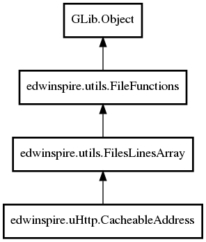

CacheableAddress
Object Hierarchy:

Description:
public class CacheableAddress :
AddressListFiles
Class that represents a list of cacheable addresses
Namespace: edwinspire.uHttp
Package: libspire_uhttp
Content:
Creation methods:
Methods:
- public
bool is_cacheable (string file_name)
Verify that the file is cacheable.
- public BinaryData return_file (
string file_name)
Returns a BinaryData. If the file is cacheable returns from the cache,
otherwise returns from the server.
Fields: